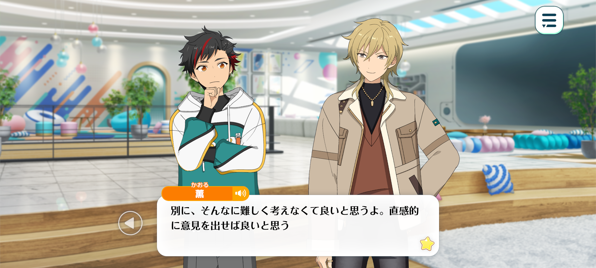
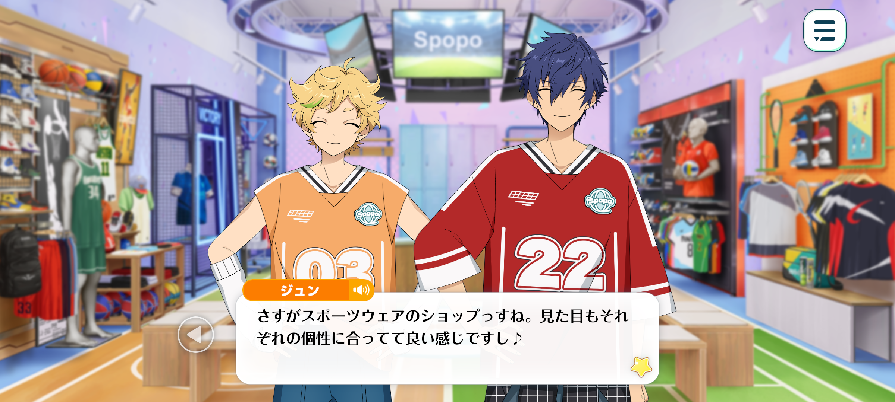
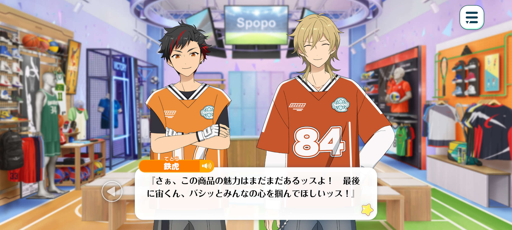

Spopo
Passion Is The Key To Appeal – Chapter 2



Tetora: What makes me want to buy something...? Hmm, honestly, I'm not really sure.
Kaoru: Don't overthink it. Just say whatever comes to mind.
For me, when it comes to clothes, I'll usually buy something if I like the design.
And if it's got nice colours or a trendy pattern, that's even more tempting.
Sora: Hane-oniisan is quite the stylish person~.
Sora's always jumping around, so being able to move freely is really important! Sora loves clothes that are soft and stretchy~.
And since Sora's always on the go, he gets really sweaty! Shishou told Sora he should pay attention to how well clothes absorb sweat, too!
Jun: Ahaha, those are some very Harukawa-kun reasons.
Tetora: Sakasaki-senpai sounds pretty overprotective, huh?
Jun: As for me... I think the price is probably what I pay the most attention to. I mean, it's not that I automatically go for the cheapest option or anything.
I just find myself wondering whether something is actually worth the money.
Ohii-san, on the other hand, just buys whatever he likes without even looking at the price. I suppose that's what happens when you're well off.
Sora: Dazzling-oniisan's super rich, isn't he~?
Tetora: I'm sure we'd all love to be able to shop without worrying about the price.
I think I'm starting to get the idea of what makes people want to buy things. Everyone seems to have their own reasons, and mine aren't all that different from yours...
But then again, if I saw someone I really looked up to wearing something, I'd definitely be more interested in it!
Sora: Someone you look up to?
Tetora: Ossu. Like, if my favourite athlete or a martial artist was wearing something, it'd definitely catch my eye!
Maybe it's because wearing the same thing as someone you admire makes you feel a little closer to them.
Jun: Ah, yeah. I think I know what you mean.
Like, if I'm wearing the same accessories or clothes as someone I admire, it almost makes me feel closer to them.
Tetora: You feel that way too, Sazanami-senpai? Glad to know we have something in common besides muscles~♪
Kaoru: Ahaha... You two bond over muscles, do you?
Anyway, we've come up with quite a few ideas now. The tricky part will be finding a way to bring them all together into one concept we can use to promote the clothes...
Tetora: Ah, in that case...
Why don't we run a few different promotional campaigns, each one focusing on a different selling point we've just discussed?
Jun: So rather than trying to squeeze everything into one idea, we tailor each promotion to highlight a particular feature?
Kaoru: It's not as though we can only make one advert for a product. In fact, we'd probably reach more people by putting out several.
Sora: Sora agrees! Shall we start with the design, like Hane-oniisan suggested?
Kaoru: Mm. The only way to show off the design is to let people actually see the product, or at least a photo of it.
So I think we should go with what we did earlier for that one: have someone model the clothes, then post the photos and videos online.
Tetora: Yeah, sounds good. I reckon it's best to keep that one simple.
Jun: As for the price... Well, it's not as though we have any control over that, and Spopo isn't exactly a cheap brand.
Perhaps rather than trying to make a point of how affordable it is, we could focus on the value for money instead?
Tetora: Value for money? It's true that people are paying more attention these days to making the most of their time and money.
Sora: And for the functionality... Maybe the best way to show that is to put the clothes to the test!
Jun: Yeah, you can't really tell how well something absorbs sweat until you've actually tried it.
Kaoru: Right, that makes sense for both the price and the functionality.
How about we make a promotional video highlighting those two aspects?
Time: A few days later
Location: At the Spopo store

Sora: This is Sora's first time wearing Spopo~! It's so comfortable!
Jun: Just what you'd expect from a sportswear shop. And it's nice how each outfit suits our individual personalities, too ♪
Tetora: Just putting it on gets me all fired up!
Kaoru: Well, they've given us permission to film here in the shop, so shall we get started?
Tetora: I'll get the camera set up, then we can all get into position~!
Sora: Okay~!
Tetora: “Hello, everyone!”
“My name's Nagumo Tetora, and I've been chosen as an ambassador for Spopo, a shop specialising in sportswear and sporting equipment!”
“Today, I'm going to introduce some of the brand-new products Spopo has to offer. We'll be showing you what makes their new innerwear so great~!”
“First up, let's hear from Hakaze-senpai!”
Kaoru: “Hiya everyone. I'm Hakaze Kaoru, and just like Tetora-kun, I'm one of Spopo's ambassadors.”
“I'd like to introduce you to their new innerwear collection!”
“As you can see, the designs are simple, but really stylish~.”
“When you hear the word 'innerwear', you probably think of something you'd wear underneath your clothes. But these look great worn on their own, too ♪.”
“If you'd like to have a closer look at the designs, why not check out Spopo's official website or social media~♪”
Tetora: “Thank you very much for that, Hakaze-senpai!”
“Next up, we have Sazanami-senpai!”
Jun: “Hi, my name’s Sazanami Jun.”
“I wanna talk a bit about the durability of the fabric.”
“As you can see… Well, I think you'll get a better idea once you've had a chance to feel it for yourselves.”
“Because the material is so soft, some people might worry that it'll tear easily.”
“But Spopo specialises in making durable fabrics that are ideal for sportswear~♪.”
“That means you can keep wearing these for years to come. Compared with other products in the same price range, I think this line offers excellent value for money ♪.”
Sora: “What a great deal~!”
Tetora: “I want one too!”
Kaoru: “Ahaha… Do we really need the adlibs?”

Tetora: “But wait! There's more! Sora-kun, why don't you finish things off with something that'll really win everyone over?”
Sora: “It’s Sora’s turn! Hello everybody!”
“Sora wants to show you just how well these clothes perform~!”
“And Sora will do that with an experiment! Jun-chan-senpai, please may you grab that~!”
Jun: “Of course… this, right? ♪”
Tetora: “A... bucket full of water?! Sora-kun, what on earth are you planning to do with that...?!“
Sora: “Hmm, this looks like it'll be enough...”
“And... plop! Sora's dunked the clothes right in~!”
Tetora: “Whoa! You just put them straight in!”
Sora: “Please take a look! The water level's gone down by half, showing just how absorbent the material is~♪”
Tetora: “Whoa! They're completely soaked! It really does absorb water!”
Sora: “So even people who sweat a lot don't have to worry! Shishou can feel reassured, too~!”
Tetora: “That’s amazing!”
Kaoru: “I mean, it is amazing, but who’s sweating that much…?”
Tetora: “Uh!”
Sora: “...Sora supposes that's a fair point~?”
Tetora: “W-well, there's no doubt about it: this is a fantastic range of innerwear!”
“If you'd like to get your hands on some, head over to Spopo's official website or check out their social media~!”